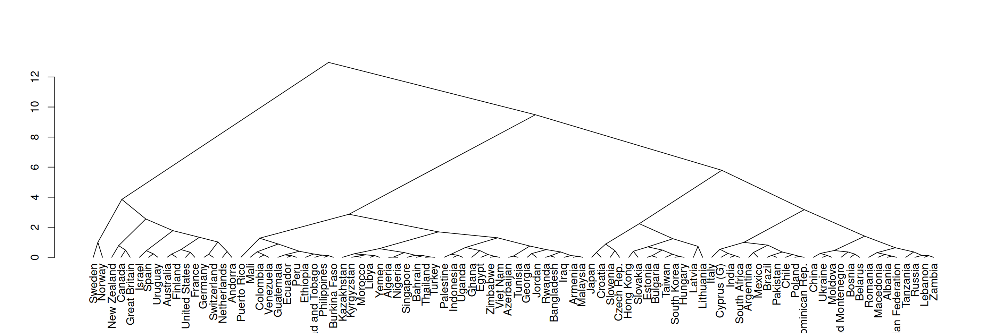
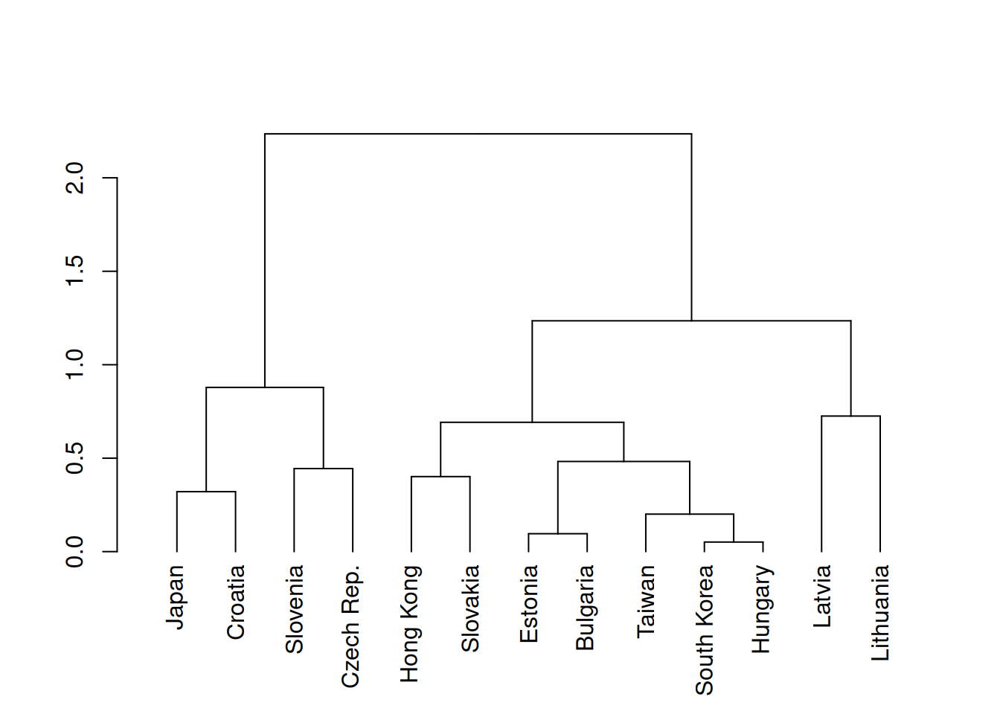
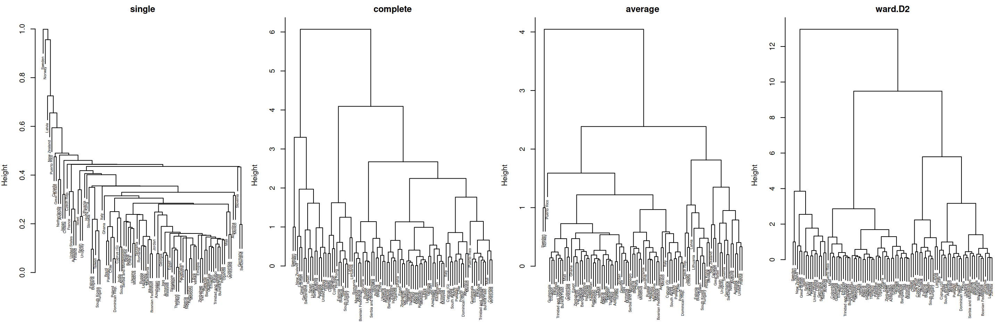

Loomulik viis objektide klasterdamiseks on koondada esmalt kõige sarnasemad objektid ja hakata tekkivatesse klastritesse järjest sarnaseid objekte lisama. See mõttekäik on aluseks hierarhilisele klasterdamisele, mille käigus klastrid moodustuvad järk-järgult.
See protsess võib alata ühest ainsast kõiki objekte hõlmavast klastrist, nii et klastrid tekivad sellest järjest teistest kõige erinevamate objektide eraldamise teel. Sellisel juhul on klasterdamine lahutav (divisive). Enamasti rakendatakse aga objekte ühendavat (agglomerative) hierarhilist klasterdamist, mille korral protsess algab üksikutest objektidest ja lõpeb üheainsa klastriga.
Important
Hierarhiline klasterdamine (hierarchical clustering) on klastrite moodustamise viis, mille korral objektid rühmitatakse järk-järgult vastavalt statistilisele kaugusele nende vahel. Sellise klasterdamise tulemuseks on puujoonis (dendrogram), mis kirjeldab vaatluste ja klastrite sarnasust ning aitab määrata sobivad klastrid.
Objektide ühendamise teel teostatava hierarhilise klasterdamise korral tekivad klastrid alljärgnevalt kirjeldatud tegevuste tulemusel.
Algseks klastrite arvuks \(K\) seatakse \(K = n\) ehk iga objekt on omaette klass.
Arvutatakse kauguste maatriks (Peatükk 16), mis väljendab esialgu objektide ja hiljem ka klastrite vahelisi kaugusi.
Leitakse kauguste maatriksis kõige väiksem kaugus ja vastavad objektid ühendatakse ühte klastrisse.
Arvutatakse uus kauguste maatriks, milles eelnevalt ühendatud objektide kohta ei arvutata kaugusi enam eraldi, vaid neid käsitletakse ühe punktina. Selle punkti kaugused leitakse vastavalt ühendamise viisile (vt allpool).
Eelnevat kahte sammu korratakse senikaua, kuni kõik objektid on ühes klastris.
Võrreldes teiste klasterdamise protseduuridega hierarhiline klasterdamine
on lihtsasti rakendatav ja olemas paljudes statistikarakendustes,
on ilmekalt kogu protseduurina esitatav puujoonisel,
ei vaja eelnevalt klastrite arvu määramist,
ei paku objektiivseid kriteeriume klastrite arvu määramiseks,
on aeglane ja raskesti esitatav suure arvu objektide korral,
ei võimalda klastreid prognoosida.
26.1 Klastrite leidmine
Järgnevalt uurime erinevate riikide elanike seas valitseivaid väärtushinnanguid. Maailma Väärtusuuringu käigus on küsitletud sadu tuhandeid inimesi erinevates maailma piirkondades. Selle tulemuseks on kultuurilised kaardid, milles on riikide asukoht kahel teljel: traditsioonilised või sekulaarsed väärtused ning ellu jäämise või eneseväljenduse väärtustamine1. Riigid on nendel kaartidel määratud kultuurilistesse rühmadesse tunnetuslikult. Vaatame, kas ja kui erinevad rühmad saame lähenedes hoopis statistiliselt, kasutades hierarhilist klasterdamist.
Sisestame andmetabeli, milles on uuringusse kaasatud riikide elanike väärtushinnangute kahe telje keskmised väärtused. Kuigi hierarhilist klasterdamist saab rakendada ka suure tunnuste arvu korral, siis antud näites kasutame klasterdamise joonisel ilmestamiseks ainult kahte tunnust.
survexp tradsec
Algeria 0.5142540 0.4864377
Azerbaijan 0.3182427 0.5271867
Argentina 0.8269262 0.6181080
Australia 1.2300503 0.8725773
Bahrain 0.5005984 0.5478684
Armenia 0.3812617 0.4294143
Ka hierarhilisel klasterdamisel peaksime viima väärtused võrreldavale skaalale Antud juhul on kõik väärtushinnangud mõõdetud samal skaalal, seega ei ole standardiseerimine vajalik. Võime seda siiski teha, et lihtsamini hinnata riikide paiknemist keskmise suhtes.
wvs[] %<>%lapply(scale) %>% as.data.frame
Joonistame nö kultuurilise kaardi, mis iseloomustab riikide paiknemist väärtushinnangute ruumis.
library('ggplot2')library('ggrepel')Seos <-ggplot(wvs) +aes(x = survexp, y = tradsec, label =rownames(wvs)) +labs(x ="Ellu jäämine või eneseväljendus", y ="Traditsioonilisus või sekulaarsus") +geom_point() +geom_label_repel(size =2) +theme_minimal()Seos
Warning: ggrepel: 32 unlabeled data points (too many overlaps). Consider
increasing max.overlaps
Hierarhilist klasterdamist R keeles saab rakendada sammhaaval. Esmalt leiame funktsiooni dist() kasutades kauguste maatriksi, milles on Eukleidilised kaugused kõikide riikide vahel. Seda tuleb teha ilma puuduvate väärtusteta. Seejärel laseme funktsioonil hclust() tuletada klasterduspuu Wardi ühenduse alusel. Lõpuks võime saadud puu teisendada puujoonise objektiks funktsiooniga as.dendrogram().
kaugused <-dist(na.omit(wvs), method ='euclidean')puu <-hclust(kaugused, method ='ward.D2')puujoonis <-as.dendrogram(puu)plot(puujoonis, type ='triangle')

Saame joonistada ka konkreetse haru, kui lõikame puud teatud kõrgusel. Nt Eesti on vasakult 4. harus, kui lõikame puud kõrgusel 3.
cut(puujoonis, h =3)$lower[[4]] %>% plot

Vertikaalse joone kõrgus näitab kaugust järgmisest vaatlusest või klastrist. Kui jätta andmed standardiseerimata, siis selle kauguse skaala ja ühikud on ühend klasterdamise aluseks olevate tunnuste skaaladest ja ühikutest.
26.2 Ühendamise viisid
Kahe objekti korral on kauguste määramine lihtne, sest mõlemad objektid on esitatavad konkreetsete punktidena tunnuste ruumis. Kuidas mõõta aga kaugust mitmest objektist koosneva klastri ja mõne objekti vahel? Sellisel juhul tuleb otsustada, mis punkt esindab klastrit ja selleks on palju võimalusi. Kui soovime teada kaugust \(d\) objekte \(i\) ja \(j\) sisaldava klastri \(L\) ja kõikide teiste klastrite \(K\) vahel, siis saame kasutada muuhulgas ühte alljärgnevatest ühendamise viisidest (linkage method):
keskmine ühendus (average linkage): \(d_{L,k} = \sum_{i \in L} \sum_{k \in K} d_{ik} / (n_{L}n_k)\);
Wardi ühendus (Ward’s method): võrdleme klastritesisest ja klastritevahelist ruutkaugusi.
Uurime, kuidas erinevad käesolevate andmete näitel saadud klastripuud erinevate ühedamise viiside korral.
par(mfrow =c(1,4), mar =c(0,4,2,0))for (i inc('single', 'complete', 'average', 'ward.D2')) {dist(wvs) %>%hclust(method = i) %>%plot(main = i, cex = .5)}

Üksikühenduse korral kipuvad klastritesse lisanduma objektid järjest ahelana ja selle tulemuseks on enamasti suured ja mitte kuigi ühtsed klastrid. Täisühenduse korral tekivad vastupidiselt väikesed klastrid, mis on sarnased lähedal asuvate klastritega. Keskmine ühendus on kesktee nende vahel. Kuigi Wardi ühendus ei ole vaistlikult mõistetav, annab see enamasti kõige loomulikumad klastrid.
26.3 Klastrite arv ja puujoonis
Tähtsaim hierarhilise klasterdamise eelis on selle tulemusel tekkiv puujoonis, mis näitlikustab klastrite järk-järgulist moodustumist ja hierarhilist ülesehitust. Klastripuud teatud kõrgusel lõigates jääb iga objekt konkreetsesse klastrisse ja nii saab puujoonist kasutada ka konkreetsete klastrite määramiseks objektidele. Vastava kõrguse määramine on paljuski tunnetuslik, aga soovitus on lõigata klastripuu sellisel kõrgusel, kus harud on pikimad.
Klastrite määramiseks on kaks võimalust: lõigata puu teatud kõrgusel või teatud klastrite arvu juures. Saame vaadata, millised klastrid tekivad, kui lõikame puu nt kõrgusel 0,5 või selliselt, et klastreid oleks kuus.
plot(puujoonis)rect.hclust(puu, h = .5, border ='red')rect.hclust(puu, k =6, border ='blue')
Klastrid saame puu alusel määrata igale vaatlusele funktsiooniga cutree(). Argumendiga h saame määrata soovitud puu lõikamise kõrguse ja argumenti k kasutades määrame klastrite arvu. Tulemuse saame sisestada andmetesse eraldi veeruna.
klastridH <-cutree(puu, h = .5)klastridK <-cutree(puu, k =6)wvs$klaster <- klastridKhead(wvs)
Klastrite iseloomustamiseks on palju võimalusi (Peatükk 17). Antud andmete korral võiksime eristada klastreid nö kultuurilisel kaardil.
Seos +aes(color =as.factor(klastridK)) +labs(color ="Klaster")
Warning: ggrepel: 35 unlabeled data points (too many overlaps). Consider
increasing max.overlaps
Klasterdamine on loominguline, sest klastritele peame tähenduse määrama ise. Nt klastris 6 on Põhjamaad, samas kui klaster 1 iseloomustab traditsioonilisi ühiskondi, kus väärtushinnangud on seotud hakkama saamisega.